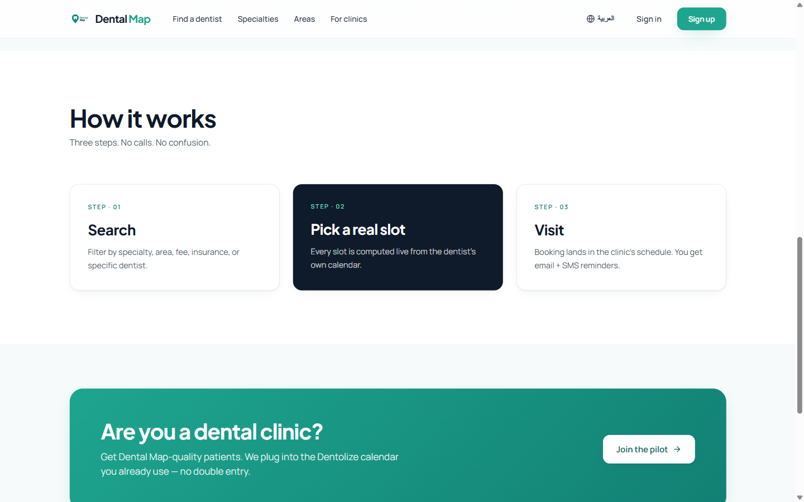
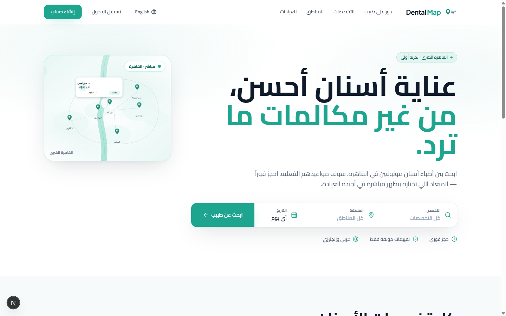

Internal · Dev → Design
Design Asset
Brief.
Every visual asset we need from the design team to take Dental Map
from functional MVP to shippable product
across the patient surface, dentist dashboard, marketing site, email,
and pilot collateral.
- Project
- Dental Map
- Document
- Visual asset request v1.0
- Date
- 2026-04-28
- Pages
- 9 categories · ~50 assets
Section 2
02
Existing brand foundation.
What's already locked in code and shipping to users. Treat this as the
floor, not the ceiling — refine, don't break. Anything you change here
flows through every asset that follows.
2.1 Palette
2.2 Type stack
2.3 Existing logo
2.4 Spacing & shadow tokens
2.5 Personality direction
2.1 Palette
Two anchors (teal & ink), one warm surface, one accent. Sampled directly
from the existing logo and locked in tailwind.config.ts. Hex values
below are authoritative — please don't substitute close-but-different shades.
Teal — primary brand & CTAs
★ = primary brand value (logo pin, primary CTAs, focus rings, map pins, badges).
Ink — typography & surfaces
Accent & surface
Coral is sparingly used — only for "offer", "new", or attention-pulling badges.
Never as a primary CTA. Surface (#F6FAFA) alternates with white for
section banding.
Constraint: teal #1EA58F is the single primary
brand value. Patient hero CTAs, dentist-side primary actions, focus rings,
map pins, verified-tick checks, and active nav states all derive from it.
Don't introduce a second equally-weighted brand color.
2.2 Type stack
Four families. Plus Jakarta Sans for display, Manrope for body, Cairo for all
Arabic glyphs, JetBrains Mono for code & metadata. Loaded from Google Fonts.
Wired in via CSS variables (--font-jakarta, --font-manrope,
--font-cairo, --font-jetbrains).
Display — Plus Jakarta Sans (Latin) + Cairo (Arabic)
Better dental care, without the phone tag.
Weights 700 / 800 · letter-spacing −0.03em on H1, −0.02em on H2 · used for
hero headlines, section heads, dentist names on cards, dashboard titles.
Body — Manrope (Latin) + Cairo (Arabic)
Search 50+ verified dentists across Cairo. See real open slots. Book
instantly — the slot you pick lands in the clinic's own calendar, not a
lead queue.
Weights 300 / 400 / 500 / 600 / 700 · line-height 1.55–1.7 for body,
1.4 for labels · default UI text everywhere.
Mono — JetBrains Mono
booking_id · 4f8a2c1e · 2026-05-02 14:30 Africa/Cairo
Weights 400 / 500 / 600 · used sparingly for IDs, timestamps, slot codes,
and metadata pills (e.g. small-caps eyebrows have a mono-ish character but
use Jakarta with letter-spacing 0.14em).
Arabic display — Cairo
رعاية أسنان أفضل، بدون مكالمات هاتفية.
Cairo handles both Arabic display & body. Pair with Manrope sizing,
apply line-height: 1.7 for Arabic body (the script needs more
vertical space than Latin). Never letter-space Arabic.
Do
- Pair Jakarta + Manrope — never Jakarta alone.
- Apply
letter-spacing: -0.03em on display sizes ≥28pt.
- Use
line-height: 1.7 for Arabic body, 1.55 for Latin.
- Use small-caps eyebrows (Jakarta, 8pt, tracking 0.18em, uppercase).
Don't
- Don't use Inter, Geist, SF Pro, or "system-ui" — those break brand.
- Don't introduce a serif. Brand is sans-only.
- Don't letter-space Arabic — Cairo's metrics don't support it.
- Don't go below 11px / 8pt for body text.
2.3 Existing logo (current state)
What ships today. Single raster JPEG at public/dental-map-logo.jpg,
rendered at 36×36px in the site header and 48×48px on the auth pages.
See Section 3.A for what we need delivered.
public/dental-map-logo.jpg · 1024×1024 raster
Issues we need fixed
- JPEG, not vector — pixelates above 200px, can't recolor.
- No transparent background — currently has hard-baked white square; bleeds visibly on tinted surfaces.
- No dark-mode variant — illegible on dark hero / footer.
- No icon-only mark — header on small screens still ships the full lockup.
- No favicon set — currently using Next.js default.
- No PWA icons — installable PWA is on roadmap (post-pilot).
- Wordmark "Dental Map" is set in the live header at
components/brand-mark.tsx using Plus Jakarta Sans with a teal accent on "Map" — this is rendered as live HTML, not part of the logo file. Worth deciding whether to formalize as a true wordmark asset.
What's signature about it
- The map-pin silhouette — speaks to "find a dentist near me".
- The clean tooth glyph inside the pin — speaks to "this is dental, not generic health".
- The teal hue — calm, clinical, modern (avoids the medical-blue cliché).
These three properties are the brand's anchor. The redrawn vector logo
must keep all three; otherwise we're rebranding, not refining.
2.4 Spacing & shadow tokens
Already defined in tailwind.config.ts. Honor these when designing
cards, modals, popovers, and any container that lives inside the app.
| Token | Value | Use |
|---|
shadow-card | 0 1px 2px rgba(15,27,42,0.04), 0 6px 18px -8px rgba(15,27,42,0.10) | Default card resting state (dentist cards, panels, modals). |
shadow-card-hover | 0 2px 4px rgba(15,27,42,0.05), 0 16px 40px -12px rgba(15,27,42,0.18) | Card hover. Always pair with -translate-y-0.5. |
shadow-search | 0 2px 4px rgba(15,27,42,0.04), 0 20px 60px -18px rgba(15,27,42,0.20) | Hero search bar — the one floating shadow on the home surface. |
shadow-teal-glow | 0 10px 30px -14px rgba(30,165,143,0.45) | Primary CTAs only. Never on inert chrome. |
rounded-2xl | 1rem (16px) | Cards, modals, hero panels, image frames. |
rounded-xl | 0.75rem (12px) | Buttons, inputs, avatars, small chips. |
rounded-full | 9999px | Pills, status badges, avatars. |
2.5 Personality direction
Three short rails the design team should hold to.
Confident
We replace phone tag with a real booking. Don't hedge. No "maybe", no "we'll try", no apology copy.
Calmly clinical
Adjacent to healthcare without being cold or sterile. Generous whitespace, low-saturation color, soft shadows.
Respectfully Egyptian
Arabic-first. Cairo references where useful (areas, dialect cues). No clichés (no pyramids, no sphinxes, no "ancient" anything).
Avoid: the "Vezeeta look" (heavy blue, medical illustration, stock photos), the "kids' clinic" look (cartoony tooth mascots), and the "Western SaaS" look (purple gradients, abstract floating cards).
Dental Map sits between Linear's restraint and Practo's regional authenticity.
Section 3 · Category A
A
Brand identity refinement.
Take the current raster logo and rebuild the brand mark as a vector system —
full lockup, icon-only, wordmark-only, with dark / light / monochrome variants
and the supporting platform asset set (favicon, PWA, social preview).
A.1 Vector logo lockups
A.2 Logo color variants
A.3 Clear-space & min-size
A.4 Favicon set
A.5 PWA icons
A.6 Brand guidelines page
A.1 Vector logo — three lockups
The single raster public/dental-map-logo.jpg needs to become a
proper vector system. Three lockups, each living at a different scale and
surface in the product.
A.1.aFull lockup (mark + wordmark, horizontal)
The signature. Mark on the leading edge, "Dental Map" wordmark trailing. Used in the site header on screens ≥640px, on email headers, on the cover of any document, on social profile banners.
- Lives in
components/brand-mark.tsx (header, currently inlined)
email templates · social banners · sales kit- Reference rendering today
- 36×36 raster + live HTML wordmark "Dental Map" set in Plus Jakarta Sans 19px / 800.
- Deliverables
- SVG (primary) + PDF (print-safe) + PNG @1x/2x/3x at 240×64, 480×128, 720×192. Embedded fonts in the SVG (don't reference external).
- Naming
logo-full-color.svg, logo-full-color@2x.png, …
References to consider
Linear (mark + wordmark proportions, restraint), Practo (regional clinical confidence), Vercel (mark/wordmark spacing rhythm). The teal accent on "Map" is currently set in code — formalize it inside the SVG so external use stays consistent.
Do
- Outline the wordmark to paths — no font dependency at use-time.
- Keep the mark anchored to the wordmark's cap-height optical centre.
- Preserve the existing teal accent on "Map".
Don't
- Don't reduce padding around the mark below 6% of mark width.
- Don't redraw the tooth-in-pin into something generic.
- Don't ship the SVG with referenced (external) fonts.
A.1.bIcon-only mark
The pin alone. Used everywhere the wordmark won't fit or would compete: favicons, PWA icons, app launcher, mobile header (<640px), in-app empty-state graphics, footer collapse, social profile avatar, WhatsApp business avatar.
- Lives in
- mobile header (where wordmark hides via
hidden sm:block) · favicons · PWA · social avatar · email signature · clinic stickers (Section I)
- Deliverables
- SVG (primary, viewBox 0 0 64 64) + PNG export script ready for downstream sizing. Provide both rounded-square and circle-cropped variants.
Do
- Design the mark to read at 16×16 (favicon size) — simplify silhouettes that disappear at that scale.
- Provide a "monogram" abbreviation if simplification is needed (e.g. tooth-only) — decide one, ship it.
Don't
- Don't ship multiple competing icon-only versions ("which one is canonical?" is a bug).
- Don't use thin strokes that disappear at 32px or below.
A.1.cWordmark-only
"Dental Map" set as outlined paths, no mark. Used in narrow horizontal contexts — long footer rows, partner logo grids, email signatures where the mark already appears in the avatar slot.
- Lives in
- footer · email signatures · partner pages · sales-kit page footers
- Deliverables
- SVG outlined paths · cap-height locked at 64px in source · keep teal accent on "Map".
Reference Stripe's wordmark behavior in the footer — minimal, outlined, tonally lower than the masthead.
A.2 Color variants
Each lockup from A.1 needs four color variants to cover every surface the
logo lands on across the product, marketing, email, and print collateral.
| Variant | Filename suffix | Where used |
|---|
| Full-color (default) |
-color |
White / light surfaces. Site header, email body, sales-kit cover, profile pages. |
| On-dark |
-on-dark |
Cover hero (deep teal/ink gradient), email dark-mode rendering, dentist-facing splash, video stills. |
| Monochrome ink |
-mono-ink |
One-color print, fax forms (yes — pilot clinics may print), small embossed stickers. |
| Monochrome white |
-mono-white |
On photography, on coral / accent backgrounds, on full-bleed photo OG images. |
Full delivery matrix: 3 lockups × 4 variants = 12 files in SVG,
plus PNG @1x/2x/3x for each = 48 raster exports. Provide a
single Figma file as source-of-truth and a build script (or your tool's export
preset) so we can regenerate without re-asking you.
A.3 Clear-space & minimum size
Define both as part of the brand-guidelines page (A.6). Specifically we need clear values for:
- Clear-space: the "no other elements may enter" zone around the mark, expressed as a multiple of the mark's cap-height (e.g. 0.5× cap-height on all sides). Most brands set this once and forget — we want it explicit.
- Minimum size on screen: the smallest pixel size at which the mark stays legible. Define separately for full lockup (likely ≥120px wide), icon-only (likely ≥24px), wordmark-only (likely ≥80px wide).
- Minimum size in print: for the sales kit and clinic stickers — typically full lockup ≥30mm wide, icon-only ≥10mm.
Today's headache: the live header passes compact to BrandMark on auth pages but the same raster logo gets squashed at 36px. With a vector mark + a defined min-size, that bug goes away.
A.4 Favicon set
Browser-tab and bookmark icon. Currently a Next.js placeholder.
| File | Size | Format | Notes |
|---|
favicon.ico | 16×16, 32×32, 48×48 (multi-res) | ICO | Lives at app/favicon.ico. Optimize the 16×16 layer separately — it cannot just be a downscale. |
icon-192.png | 192×192 | PNG | Android home-screen. |
icon-512.png | 512×512 | PNG | Android splash. |
apple-touch-icon.png | 180×180 | PNG (no transparency) | iOS home-screen. Solid teal background, white mark — never a transparent PNG (iOS adds a white box). |
safari-pinned-tab.svg | vector | SVG (single path, monochrome) | Safari pinned-tab. Color is set by the user's accent color, not by you. |
A.5 PWA installable icons
Required for the PWA install prompt (post-pilot roadmap, but assets-first is cheap).
icon-192-maskable.png — 192×192, with safe-zone padding (the icon must survive a circular mask, a squircle mask, and a rounded-rect mask).icon-512-maskable.png — 512×512, same constraints.icon-192-any.png & icon-512-any.png — non-maskable variants for legacy installers.- Maskable safe-zone is a centred 80% circle inside the canvas — anything outside may be cropped.
A.6 Brand guidelines — single page
Not a 40-page brand bible. One A4 page (or a single Notion / Figma page)
that anyone — a freelance illustrator, a partner, a journalist asking for
our logo — can read in under two minutes.
Required sections (in this order)
- Logo lockups — the three from A.1, side by side, with filename + SVG link.
- Color variants — the 4 swatches from A.2, on-surface examples (light, dark, photo, accent).
- Clear-space & min-size — diagrammed (cap-height grid, min-px callouts).
- Color palette — the swatches from §2.1, with hex + RGB + role.
- Type stack — Plus Jakarta Sans, Manrope, Cairo, JetBrains Mono with sample lines.
- Don'ts — 6 visual examples of common abuses: stretched, recolored to non-brand teal, on busy photo without overlay, mark-only with extra wordmark added, mark inside a circle (it's already a pin), tilted.
- Asset access — link to the Figma source + the exported asset folder.
- Contact — who to ping when in doubt (single email — likely the founding team).
Format: deliver as a Figma frame (so we can iterate inline) and as a
static PDF for external partners. Naming: brand-guidelines-v1.pdf.
Discipline: if a guideline can't be applied without reading
a paragraph, it's not a guideline — it's an aspiration. Diagrams over prose.
Section 3 · Category B
B
Social & OG images.
Every link Dental Map appears in — WhatsApp, X/Twitter, LinkedIn, Slack
pastes — needs a designed preview, not the auto-screenshot Next.js
currently fills with. Multiple variants per surface so a shared profile
link looks different from a shared search.
B.1 Default OG (1200×630)
B.2 Per-page OG variants
B.3 Twitter/X card
B.4 WhatsApp preview
B.1 Default OG image
What appears when the homepage is shared. Currently nothing — Next.js
serves a default screenshot, which is illegible at thumbnail size.
B.1Homepage default OG
- Dimensions
- 1200×630 (Open Graph), with safe-zone in central 1080×566 (~10% padding).
- Lives in
app/[locale]/layout.tsx → metadata.openGraph.images
- Locale variants
- Two:
og-home-en.png and og-home-ar.png (RTL layout, Arabic copy).
- File format
- PNG (preferred for crisp text) or WebP. Keep under 300KB each.
Composition: dominant headline ("Better dental care, without the
phone tag." / "رعاية أسنان أفضل، بدون مكالمات هاتفية."), Dental Map full lockup
bottom-left, the teal-pin map dot pattern bottom-right or as a soft texture, no
photography. Text needs to be readable at 600×315 (the WhatsApp preview size).
References
Linear's release-note OG cards (single bold line + mark + soft accent), Vercel's docs OG (gradient + restrained type), Notion's empty-state OG (one line of value, no clutter). Avoid: stock dental photography, smiling-patient shots, abstract gradients without typography.
Do
- Set headline at min 64pt — must read at thumbnail.
- Bake fonts to outlines (no live font in PNG).
- Keep the lockup at ≥120px to honor min-size.
Don't
- Don't put critical text in the outer 10% — Twitter crops.
- Don't use photography — it doesn't survive thumbnail.
- Don't mix AR and EN in the same image.
B.2 Per-page OG variants (template-driven)
These shouldn't be hand-designed one at a time — they need to be a template
we can render dynamically per page. Deliver one Figma master per template; we
wire it to next/og so it renders on demand.
B.2.aSearch-results OG template
Shared when someone copies a filtered search URL ("dentists in Heliopolis under 500 EGP"). Should reflect filters: specialty, area, count.
- Lives in
app/[locale]/search/opengraph-image.tsx (to be created)- Variables
- specialty, area, result count, locale
- Composition
- Big number ("23 dentists found"), then specialty + area as a subhead, lockup bottom-left, soft map texture.
- Locale
- Auto-flips RTL when
locale === "ar"
B.2.bDentist-profile OG template
Shared when someone sends a dentist link to a friend ("look at this orthodontist"). Most-shared link on the platform — design accordingly.
- Lives in
app/[locale]/dentist/[slug]/opengraph-image.tsx- Variables
- name, title (consultant/specialist), specialty, fee, clinic name, area
- Composition
- Avatar (initials block, teal-50 bg, teal-700 mono initials — same as
dentist-card.tsx:31), name 56pt, specialty + area, fee badge, lockup bottom-right.
- Locale
- Use
nameAr in AR template, nameEn in EN.
B.2.cFor-clinics OG (dentist acquisition)
The single most important share image — this is what dentists in WhatsApp groups will see when a peer sends them the pilot invite.
- Lives in
app/[locale]/for-clinics/opengraph-image.tsx
- Composition
- Headline "Bookings that land in your calendar" (EN) / "حجوزات تصل مباشرة إلى تقويمك" (AR). Sub: "Plug into Dentolize. Free during pilot." Lockup bottom-left. Calm teal gradient bg.
B.3 Twitter / X card
Twitter respects the OG image but at a different aspect ratio for the "summary_large_image" card. Same 1200×630 source works — but design with the 1.91:1 crop in mind.
B.4 WhatsApp preview
WhatsApp uses OG image but crops it square in the chat preview. Design needs to survive a centre-square crop at 300×300. Test every OG variant by previewing it in a real WhatsApp message before signing off — the actual distribution channel for the pilot is dentist WhatsApp groups, so this is the single most-viewed surface.
Most distribution will happen in WhatsApp groups. Treat the
600×315 thumbnail (and the 300×300 square crop) as the design canvas. The
1200×630 full size is a courtesy to the rare desktop opener.
Section 3 · Category C
C
App UI illustrations.
Empty states, success states, error states, and onboarding panels. These
are the moments a user expects nothing — a flat default looks broken;
a thoughtful illustration looks like care. Nine assets, all in the same
illustration system.
C.1–C.4 Empty states
C.5–C.6 Success states
C.7 Dentist signup onboarding (3 panels)
C.8 Google Calendar tutorial (3 panels)
C.9 Error states (404, 500, slot-taken)
C.0 Illustration system (read first)
All nine illustrations in this section need to feel like one family.
Define the visual rules once; apply across every asset. We'd rather have
one consistent illustrator than three variants from three sources.
System rules
| Property | Rule |
|---|
| Color count | Max 4 fills + 1 line color. Default palette: teal-500, teal-100, ink-900 (line), white (fill), coral-500 (single accent moment per illustration, optional). |
| Stroke weight | 1.5px at 24×24 viewBox baseline → scales with line width. No mixing fat & thin lines in same illustration. |
| Style | Geometric / semi-flat. Slight "depth via offset shape", not gradients or shading. |
| People | Avoid. If unavoidable (onboarding C.7/C.8), abstract — silhouettes, no faces, brown-skinned defaults to fit Egyptian audience. |
| Backgrounds | Transparent. Surface tinting happens in the parent component (bg-teal-50). |
| Format | SVG primary (inline-able). PNG fallback only for emails (where SVG renders inconsistently). |
| Sizing | Designed at viewBox 320×240 unless noted. Empty states render at 192px wide; onboarding panels at 320px wide. |
| Naming | illustration-<state>-<variant>.svg e.g. illustration-empty-no-results.svg |
Style references
Doola's empty-states (geometric, restrained), Linear's onboarding (one accent color, line-driven, tiny humans), Stripe's docs illustrations (depth via offset, not shading). Avoid: blob.style purple gradients, isometric 3D, undraw.co generic style, Lottie-default cartoon humans.
Across all 9 illustrations, deliver:
- 1 Figma file with all 9 frames + the design tokens (color styles, line styles).
- 9 SVG files (transparent bg, optimized via SVGO).
- 9 PNG @2x and @3x fallbacks for email use.
- 1 mood-board page in Figma (style references + do/don't).
C.1 – C.4 Empty states
C.1No search results
- Lives in
app/[locale]/search/page.tsx · empty branch when filters return zero rows- Existing copy
- "No matches yet — try widening your filters, or browse all dentistry below." (
messages/en.json → Search.emptyBody)
- Visual idea
- Magnifying-glass-over-map-with-no-pins. Or an empty appointment book with a tiny pin sticker on the corner. Pick one — don't ship two.
- Sizing
- Renders at 192×144 (viewBox 320×240 → scaled).
C.2No bookings yet (dentist dashboard)
- Lives in
components/dashboard/bookings-table.tsx:56–63 · the appointments.length === 0 branch- Existing copy
- "No bookings yet — patient-side search ships next week." → expected to evolve to "When patients book, they'll appear here with phone, time, and quick actions."
- Visual idea
- An empty calendar page or a phone with a notification dot — the moment before the first booking, optimistic, not sad.
- Tone
- Anticipation, not absence. The dentist is one patient away from validation.
Reference
Linear's empty inbox illustration (a single envelope, a soft ripple) — anticipation, not emptiness.
C.3No Google Calendar connected
- Lives in
components/dashboard/gcal-connection-card.tsx · disconnected state- Existing copy
- "Connect to go live — Dental Map reads your Google Calendar free/busy to compute open slots, and writes new bookings back into it. Dentolize users: point Dentolize at the same Google Calendar and the loop becomes automatic." (
Dashboard.gcalExplainBody)
- Visual idea
- Two calendar surfaces — Dental Map and Google Calendar — with a teal arc connecting them. Or a single calendar with a small "plug-in" icon hovering above it. The asset should communicate linking, not vague "calendar".
C.4No clinic locations on map
- Lives in
components/patient/clinic-map.tsx:125–135 · the mapped.length === 0 overlay (currently a generic gray pin SVG)- Existing copy
- "No clinic locations to display" / "لا توجد عيادات بإحداثيات على الخريطة"
- Visual idea
- A flat city silhouette of Cairo (Nile + a few skyline cues, abstracted) with no pins on it. Specifically Cairo, not generic — the user opened a Cairo-tagged search.
- Special note
- Replaces the inline gray-pin SVG currently at
clinic-map.tsx:127–129.
C.5 – C.6 Success states
C.5Booking confirmed
- Lives in
app/[locale]/book/[slot]/confirm/page.tsx · post-submit success route- Existing copy
- "Booking confirmed. We sent the details to your email. The clinic has been notified — they'll call if anything changes." (
Booking.successTitle, successBody)
- Visual idea
- A clean appointment card with a teal check-mark, soft confetti or a single ripple — never explosive celebration. This is healthcare; quiet relief beats triumph.
- Sizing
- Renders at 240×180 desktop, 192×144 mobile.
Do
- Imply the appointment ("a card with date") not the celebration.
- Use teal-500 for the confirmation tick.
- Single coral accent allowed (the "new" badge moment) — optional.
Don't
- Don't use Lottie confetti — the user just spent money on healthcare.
- Don't include a smiling-face icon.
- Don't rotate the card ≥6° — keep visual stability.
C.6Calendar synced
- Lives in
components/dashboard/gcal-connection-card.tsx · the connected state · also the post-OAuth redirect ?gcal=connected- Existing copy
- "Your Google Calendar is connected. Dental Map will read free/busy and write confirmed bookings here." (
Dashboard.gcalStatus_connected)
- Visual idea
- Two calendars locked together with a soft teal pulse / loop arrow. Communicates "they talk now". Pair with the C.3 disconnected illustration so the before/after is visually obvious.
C.7 Dentist signup onboarding (3 panels)
A 3-step inline flow on first dashboard visit. Each panel: 320×240 illustration + headline + one-liner. Three illustrations total, sequential.
| Panel | Illustration | Headline (EN) | One-liner |
|---|
C.7.a |
A clinic facade with a "Welcome" sign and a Dental Map pin floating above |
"Welcome to Dental Map." |
"Three steps and you're live with your first booking." |
C.7.b |
A weekly calendar with hours blocks (Mon–Sat highlighted, Fri grayed) — translates the working-hours editor visually |
"Tell us when you see patients." |
"Working hours decide which slots show up. You can edit anytime." |
C.7.c |
The "two calendars locked together" motif from C.6 — but as the future state, more aspirational |
"Connect your calendar — go live." |
"We sync with Google Calendar (and through it, Dentolize). One toggle and patients can book." |
Critical: C.7.b should mirror the structure of components/dashboard/working-hours-editor.tsx — Sunday-first week (per Dashboard.day0 = Sunday in messages/en.json), Friday as the visual rest day in Egypt. Don't ship a Monday-first calendar — that's a wrong-region tell.
C.8 Google Calendar tutorial (3 panels)
Inline help that explains the GCal handshake, shown when the dentist clicks
"How does this work?" next to the Connect button. The hardest concept in the
product — illustration earns its keep here.
| Panel | Illustration | Headline (EN) |
|---|
C.8.a |
A single calendar with shaded busy blocks — labelled "Your Google Calendar" |
"We read your free/busy." |
C.8.b |
The same calendar with the busy blocks now visualized as greyed-out slots on a separate grid (the patient slot picker) |
"Open slots are computed live." |
C.8.c |
A new event being written into the calendar — a single new block highlighted teal — labelled "New booking" |
"Bookings land back in your calendar." |
C.9 Error states (3 illustrations)
C.9.a404 — page not found
- Lives in
app/[locale]/not-found.tsx
- Visual idea
- A map with a torn corner — playful but not cartoonish. The pin is still there; just the page around it is missing.
C.9.b500 — generic error
- Lives in
app/[locale]/error.tsx
- Visual idea
- A clipboard with a small wrench overlapping it — "we know, we're fixing it." Tone: humble, not joking.
C.9.cSlot already taken
- Lives in
components/patient/booking-form.tsx · the alreadyTaken branch- Existing copy
- "Sorry — this slot was just taken. Pick another." (
Booking.alreadyTaken)
- Visual idea
- A grid of slot cards with one greyed-out and a soft "X" — emphasizing "it was here a moment ago". Communicates that someone else just booked, not that the system failed.
- Race-condition reality
- This case will happen at pilot scale. The illustration is the difference between users blaming Dental Map vs. blaming bad luck.
Section 3 · Category D
D
Iconography.
Lucide handles generic UI icons (chevrons, copy, share). Everything
dental-specific is on us. Five families: specialty, service, functional
brand variants, custom map pin, and trust badges.
D.1 Specialty (7)
D.2 Service (8)
D.3 Functional / brand variants (6)
D.4 Custom map pin
D.5 Trust badges (7)
D.0 Icon system rules
All custom icons in §D ship as one set so they sit cleanly next to Lucide
(which is what we use for non-dental icons everywhere in the app).
| Property | Rule |
|---|
| Grid | 24×24 viewBox (matches Lucide). |
| Stroke | 1.5px (matches Lucide). Outline-only — no filled icons in this family. |
| Stroke caps / joins | round / round. |
| Optical alignment | Optical centre, not geometric — icons should feel balanced next to a Lucide icon at the same size. |
| Color in source | Single currentColor — never bake in teal or ink. Color comes from the parent. |
| Format | SVG primary. Provide a single icons.tsx with React-component exports (named after the icon, e.g. OrthoIcon). |
| Filenames | icon-<family>-<name>.svg — e.g. icon-specialty-ortho.svg |
D.1 Specialty icons (7)
Used on the home-page specialty grid (app/[locale]/page.tsx · "Every kind of dentistry"), the search-page filter chips, and dentist-card specialty rows. Locked list — these are the only seven.
| Filename | Concept | Used in (EN/AR) |
|---|
icon-specialty-adult.svg | An adult tooth, clean. No mouth, no smile. | "Adult dentistry" / "أسنان البالغين" |
icon-specialty-pediatric.svg | A small tooth with a soft side-cue (a pacifier outline? a star?) — not a cartoon face. | "Pediatric" / "أسنان الأطفال" |
icon-specialty-ortho.svg | A tooth with a bracket / wire detail. | "Orthodontics" / "تقويم الأسنان" |
icon-specialty-cosmetic.svg | A tooth with a soft sparkle / shine glyph. | "Cosmetic" / "تجميل الأسنان" |
icon-specialty-endo.svg | A tooth in cross-section, showing the root canal — clinical. | "Endodontics" / "علاج الجذور" |
icon-specialty-implants.svg | A tooth with a screw-post detail — abstract enough to not feel surgical. | "Implants" / "زراعة الأسنان" |
icon-specialty-surgery.svg | A tooth with a soft surgical-tool cue (forceps abstracted, NOT a syringe — too aggressive). | "Oral surgery" / "جراحة الفم" |
Tone check: these icons appear next to "Find a dentist" CTAs.
They should reduce anxiety, not increase it. No blood, no instruments mid-action,
no exposed nerves. The icon for "Endodontics" is the hardest — see if a
simplified cross-section reads better than a literal root-canal procedure.
D.2 Service icons (8)
Used on the dentist-profile page next to the services list. More granular
than specialty icons — patients pick a dentist, then see what services that
dentist offers.
| Filename | Concept | Label EN / AR |
|---|
icon-service-cleaning.svg | Tooth + brush bristles cue | Cleaning / تنظيف |
icon-service-whitening.svg | Tooth + soft sparkle (different from cosmetic-specialty: more subtle) | Whitening / تبييض |
icon-service-fillings.svg | Tooth with a small filling shape on the surface | Fillings / حشوات |
icon-service-rootcanal.svg | Tooth cross-section + a clean canal line (the careful version of D.1's endo) | Root canal / علاج عصب |
icon-service-extraction.svg | Tooth + a soft outward arrow — abstract, not clinical | Extraction / خلع |
icon-service-braces.svg | Tooth row with brackets + wire | Braces / تقويم ثابت |
icon-service-implants.svg | Same as D.1 implant or a slightly different angle (decide one — don't ship two) | Implants / زراعة |
icon-service-xray.svg | A tooth in an x-ray frame (radiograph rectangle), the tooth shown lighter | X-ray / أشعة |
D.3 Functional / brand variants (6)
Where Lucide's defaults aren't enough — either we need a brand-aware variant
(WhatsApp, Google Calendar) or a tone-different replacement (Phone, Mail in
the bookings table). Match Lucide's stroke and grid exactly so they slot in.
| Filename | Replaces / supplements | Used in |
|---|
icon-fn-whatsapp.svg | Currently inlined SVG at components/dashboard/bookings-table.tsx:147 · also will appear in clinic stickers | Bookings table action button · contact CTA · clinic stickers |
icon-fn-gcal.svg | The Google Calendar mark (always-licensed; only the sync motif is custom — see C.6) | Connect-button label · dashboard nav · Sales kit step diagrams |
icon-fn-dentolize.svg | Wordmark or icon for our key partner — coordinate with Dentolize on use rights | "For clinics" page · onboarding slide · sales kit |
icon-fn-copy.svg | Lucide's Copy works — only override if we want a tonal match | "Copy details" buttons |
icon-fn-phone-egp.svg | Phone icon with "+20" cue (Egypt country code) — used at booking when the phone field surfaces | Booking form phone label |
icon-fn-clock-cairo.svg | Clock variant marked "GMT+2" or "Cairo" — used on slots / appointments | Slot grid · bookings table time cell |
The last two (D.3.e, D.3.f) are nice-to-haves — only ship if they
add clarity. If they feel forced, drop them and use the Lucide defaults.
D.4 Custom map pin
The single highest-visibility asset on the patient surface — every search
result paints multiple of these on the map. Today they're a quick CSS hack;
we want a proper designed asset.
D.4Map pin (replaces inline DivIcon)
- Lives in
components/patient/clinic-map.tsx:26–54 · the makePinIcon function — currently builds a 36×36 teardrop via inline HTML/SVG with a generic clipboard glyph inside- Today's color logic
- Inactive:
#14b8a6 with white ring. Active (hover/selected): #0f766e with #ccfbf1 ring + 1.15× scale.
- Deliverables
- SVG (3 states: default, hover, active). PNG @1x/2x/3x at 36×48 (anchored bottom-centre). Source Figma frame with state styles.
- States
- Default · Hover (1.15× scale, deeper teal ring) · Active/selected (filled with brand teal, white tooth glyph)
Do
- Use a tooth glyph inside the pin — the brand cue.
- Anchor the pin tip at
iconAnchor: [18, 36] (matches existing math).
- Match brand teal exactly —
#1EA58F default, #128074 active.
- Soft drop-shadow inside the SVG — no separate shadow filter needed.
Don't
- Don't use the clipboard / Lucide-Building glyph that's there now.
- Don't ship a 64×64 pin — the cluster density at zoom 11 will overwhelm.
- Don't animate via JS — bake transition into CSS, the existing inline asset already does.
- Don't break the bottom-tip anchor — Leaflet positioning depends on it.
Reference
Airbnb's listing pins (semantic content inside, not just a dot), Foursquare City Guide pins (tone), Mapbox Studio's pin tutorial for anchor mechanics.
D.5 Trust badges (7)
Badges that appear on dentist cards (components/patient/dentist-card.tsx),
profile pages, and inside search filter chips. Each one needs one icon
(24×24) and the rules for when it appears.
| Badge | Trigger | Color treatment |
|---|
Verified (BadgeCheck today) | Default for every pilot clinic — manual list | Teal-500 fill, white check |
| Top-rated | ≥4.7 average from ≥10 reviews — post-pilot | Coral-500 background, white star |
| On-time | ≥90% appointments started within 15min of booked time | Ink-700 outline + tiny clock |
| Female dentist available | At least one female dentist in clinic | Teal-100 fill, ink-700 silhouette |
| Kids-friendly | Manually flagged — pediatric specialty + clinic confirmation | Teal-100 fill, ink-700 small-figure cue |
| Accessible | Wheelchair access, no-stairs entrance — manual | Teal-100 fill, ink-700 wheelchair glyph |
| Female-only hours | Specific working-hours blocks women-only — relevant for some Cairo clinics | Coral-100 fill, coral-600 silhouette |
Each badge: two SVGs (icon-only 24×24, and pill version with label+icon 80×24). Pill version uses Plus Jakarta Sans 10pt 600 for the label.
Cultural specificity: the "female dentist available" and
"female-only hours" badges are a real-world need in Egypt that Vezeeta
handles poorly. Treat them as features, not afterthoughts. Get the silhouettes
respectful (modest, not cartoonish, no veil clichés or absences).
Section 3 · Category E
E
Photography direction.
Three jobs: refine the existing hero, set a portrait standard for the 50
pilot dentists, and set a clinic-interior standard. Plus a mood board so
every photographer (yours or each clinic's) shoots to the same brief.
E.1 Hero refinement
E.2 Dentist portrait guide
E.3 Clinic interior guide
E.4 Mood board
E.1 Hero refinement
The current hero ships in three baked PNGs (AR desktop, AR mobile, EN desktop)
that combine UI mock + imagery + headline overlay. They were built quickly to
ship the brief — they're now the most-viewed surface and need to graduate.
Current state — what ships today

Current home — app/[locale]/page.tsx · live at https://dental-map-mvp.vercel.app

Current AR home — RTL flip, Arabic Cairo type, identical layout
E.1Refined hero — 4 deliverables
- Lives in
- Patient home
app/[locale]/page.tsx · the hero block above the search bar
- Replaces
hero-en-desktop.png, hero-ar-desktop.png, hero-ar-mobile.png + the live composite (live-hero.png, live-hero-top.png) in repo root
- Deliverables (4 files)
- EN desktop (1920×900), EN mobile (750×1100), AR desktop (1920×900, RTL), AR mobile (750×1100, RTL)
- Format
- WebP primary (≤120KB each), PNG fallback
Composition direction
- The teal radial wash (
bg-hero-wash in tailwind.config.ts) stays — it's the brand atmosphere.
- Add depth via an abstract Cairo-skyline silhouette (very subtle, ink-100 opacity 30% behind the search bar) — the "where" cue without resorting to landmarks.
- Optionally: a single dentist-card preview floating tilted ~3° at 70% scale on the right (desktop only) — visual proof that bookings are real.
- Mobile: vertical stack, no skyline silhouette (clutters at small size).
- RTL: not just flipped — relayout. The eyebrow "Greater Cairo · pilot" still reads left-to-right of the icon, even in AR.
Do
- Build in Figma so we can iterate quickly without re-shooting.
- Hold to the existing copy — see
messages/en.json & messages/ar.json "Home" keys.
- Layer 2–3 radial gradients (per CLAUDE.md anti-generic rules).
Don't
- Don't ship a stock photo of a dentist — instant generic.
- Don't use a single flat radial — flat backgrounds look "AI-default".
- Don't include landmarks (Pyramids, Sphinx, Khan el-Khalili).
E.2 Dentist portrait — guide + placeholder
50 pilot dentists, each needing a portrait. We're not paying for a photographer
per clinic — most will use phone shots. The design team's job is to write the
short guide that turns a phone shot into a usable, consistent portrait.
E.2.aStyle guide (the phone-shot rules)
One short PDF (or 2-page Notion). Photographs the clinic-side WhatsApp can quickly read and follow.
- Frame: head + shoulders, vertical 3:4, centred. Eyes on upper third.
- Background: clinic wall (teal-tinted if possible) or solid white. Never a window or "doorway with hallway behind."
- Lighting: north-facing window or even ceiling fluorescent. No harsh single-side. No flash.
- Pose: shoulders square. Slight smile (closed teeth, ironically) or neutral.
- Wardrobe: white coat OK, scrubs OK, no patterned shirts. No clinic logo embroidery in frame.
- Phone shot rules: portrait orientation, rear camera, no zoom (zoom degrades quality).
- Send as: WhatsApp original-quality (turn off auto-compression).
Deliver also: a 1-page "good shot vs. bad shot" comparison sheet — six side-by-side photos. The clinic admin sees this once on WhatsApp and immediately gets it.
E.2.bPortrait placeholder (when no photo provided)
- Lives in
components/patient/dentist-card.tsx:30–32 · today shows mono initials (e.g. "AS") on teal-50 background, 56×56 rounded-xl- Existing fallback
- Initials block from last two name parts, teal-700 on teal-50, Plus Jakarta Sans 18px 800.
- Deliverable
- Keep the initials fallback as it is — but design the case where the dentist has a photo: a 1:1 cropped circular avatar at 56×56, with a 1px teal-200 border ring.
- Cropping rule
- Eyes on upper third of the circle. Implement in
lib/dentists/list.ts via a centre-crop transform.
E.3 Clinic interior — guide + placeholder
Same logic as E.2 but for clinic photos. Used on dentist-profile page and (post-pilot) the clinic-detail page.
E.3.aClinic photo style guide
- Frame: 16:9 horizontal, the dental chair as central subject, room context visible.
- Lighting: ambient overhead, no operatory light on. The chair should look still, not in-use.
- Composition: at least one identifiable depth cue (cabinetry, second chair in background) — not a flat wall behind chair.
- Cleanliness cues: visible (sealed instrument trays, clean counter) but not staged.
- No people in shot. The patient feels safer when the room looks ready, not occupied.
E.3.bClinic photo placeholder
For clinics without a photo. A subtle illustration of a dental chair in the brand teal palette — flat, geometric, calm. Sized 16:9, optimized at 480×270.
E.4 Mood board — single page
One Figma page. 12 reference shots. Six "yes" and six "no". Captioned. The
photographer / clinic admin / freelancer can read it in two minutes.
"Yes" reference categories (six images)
- A doctor portrait with calm clinical lighting — Practo's better profile shots.
- A clinic interior with the chair as subject, depth cues, no people — high-end Cairo dental clinic photography (search "ToothPedia Cairo" or similar).
- A booking screen with brand teal accents — Linear's calendar feature page is a fair adjacent reference.
- A close-up of clean dental instruments (background shot for the "verified" badge story).
- A patient hand on a phone, thumb-up swipe — implies the booking moment without showing the patient face.
- An everyday Cairo street shot at golden hour (color reference for warmth in marketing photography, not a literal homepage shot).
"No" reference categories (six images)
- Generic Western stock dentist with thumbs-up — instant fake.
- Smiling-patient-in-chair (we sell calm, not a perfect outcome).
- Children's clinic cartoon mural background — wrong audience tonally.
- Pyramids / Sphinx / palm trees in any composition — region cliché.
- Hard flash dental tool close-up — surgery-anxiety trigger.
- Vezeeta's blue medical hero photography style — exactly what we're not.
Caption each one with two words: why-yes / why-no. ("Calm lighting." / "Stock smile.") Keep the page browsable in 60 seconds.
Where the mood board lives: Figma file shared with all pilot
clinics in the WhatsApp onboarding handoff. We're going to send this link
over WhatsApp 50 times — design it for that medium (one page, image-heavy,
light text, mobile-readable).
Section 3 · Category F
F
Email-template visuals.
We send transactional email via Resend (lib/email). Today they
are plain HTML with no header, no branding. Five branded headers + a footer
that match the product surface and survive Gmail / iOS Mail / Outlook.
F.1 Patient confirmation
F.2 Clinic notification
F.3 Reminder (24h)
F.4 Dentist welcome
F.5 Footer
F.0 Email constraints (read first)
Email is not the product surface. Outlook eats CSS, Gmail clips long
messages, iOS Mail handles dark mode unpredictably. The visuals below are
deliberately simpler than the in-app illustrations — survival > brand
fidelity.
| Constraint | Rule |
|---|
| Header type | PNG only (no SVG, no live CSS gradients in header). |
| Width | 600px max — beyond that Gmail force-scrolls. |
| Header height | 120–160px. No taller — burns first-screen real estate. |
| Dark mode | Header should look acceptable when iOS auto-inverts. Use dark-on-teal, never white-on-light-teal. |
| Locale | Two PNGs per header: AR + EN. Never mix scripts in a single image. |
| Retina | Render at 1200×320, deliver at 600×160. Browsers downscale cleanly. |
F.1 Booking confirmation — patient
F.1Patient confirmation header
- Lives in
lib/email/booking-confirmation.tsx (templates) · sent via Resend at booking submit
- Composition
- Teal gradient bg (matching cover), Dental Map full lockup centred, white-tone wordmark variant from A.2. Subtle map texture at 8% opacity behind.
The email body itself is plain — the header is the only visual moment. Tone: "this booking is real, you're handled."
F.2 Clinic notification
F.2Clinic notification header
- Lives in
lib/email/clinic-notification.tsx · sent to clinic email at booking
- Composition
- Different from F.1 — this one needs to feel like an internal alert, not a customer comm. Slimmer header (90px), ink-700 background, white lockup, tiny "New booking" pill in teal.
The clinic admin receiving this on WhatsApp / in clinic-side Gmail needs to instantly recognize it as "a Dental Map booking arrived" — not a marketing email.
F.3 24h reminder
F.3Reminder header
Sent 24h before the appointment. Header reads "Tomorrow at the clinic" / "غدًا في العيادة". Light tone — anticipation, not warning.
F.4 Dentist welcome (post-signup)
F.4Dentist welcome header
- Lives in
lib/email/dentist-welcome.tsx (to be created) · sent at sign-up complete
- Composition
- Refrain of the C.7.a "welcome to Dental Map" illustration, but flatter (illustrations don't render reliably in email — bake a screenshot of the illustration as PNG).
This is where the design team has the most license — the recipient is a friendly user (a dentist who just signed up), and we're trying to convert them to first booking.
F.5 Email footer (universal)
F.5Universal email footer
- Lives in
lib/email/components/footer.tsx — included by every transactional email
- Contents
- Wordmark-only logo (A.1.c monochrome ink) · single-line tagline "The dentist booking engine, wired to the clinic." · social icons (Instagram, Facebook, WhatsApp Business) · unsubscribe link · address block per Egyptian e-commerce regs.
- Width
- 600px · 120px tall · ink-50 background · ink-500 text
Do
- Use bulletproof email-safe HTML (table-based, inline styles).
- Provide PNG-only social icons — don't trust SVG rendering.
- Build in Figma + a static HTML file we paste into
footer.tsx.
Don't
- Don't use web fonts in email — Outlook drops them.
- Don't include a "Forward to a friend" CTA — we're transactional, not marketing.
- Don't include the live tagline image as text — bake to outlines.
Test matrix before sign-off: the design team's deliverable
isn't done until the headers have been rendered in (a) Gmail desktop,
(b) Gmail Android, (c) iOS Mail light + dark, (d) Outlook 365, (e) WhatsApp
in-chat preview. Litmus / Email on Acid screenshots in the handoff.
Section 3 · Category G
G
Marketing-site visuals.
The home page beyond the hero, plus the "for clinics" acquisition surface,
plus content marketing assets. These are the assets that earn the click,
not just survive it.
G.1 "How it works" 3-step illustrations
G.2 Feature-section icons
G.3 Testimonial avatar style
G.4 "For clinics" value-prop graphics
G.1 "How it works" — 3-step illustrations
The "Three steps. No calls. No confusion." section on the patient home
page (app/[locale]/page.tsx · Home.howItWorks*
keys). Three illustrations, each ~280×200, sequential.
| Step | Existing copy | Visual idea |
|---|
| 1. Search |
"Filter by specialty, area, fee, insurance, or specific dentist." |
A search bar on top of a Cairo map silhouette — pins lighting up under it. Same map silhouette as E.1's hero. |
| 2. Pick a real slot |
"Every slot is computed live from the dentist's own calendar." |
A slot grid (matching components/patient/slot-grid.tsx) — one slot pulsing teal-500 mid-pick. |
| 3. Visit |
"Booking lands in the clinic's schedule. You get email + SMS reminders." |
A clinic-card morphing into a calendar event — communicates "the booking is now in the calendar". |
These should follow the §C illustration system — same line weight, same
palette, same flat-with-offset depth — so they sit consistent next to the
in-app states.
G.2 Feature-section icons (3)
Three small icons used in the trust-strip below the hero ("Instant booking",
"Verified reviews only", "Arabic & English"). Currently inline Lucide icons.
icon-feature-instant-booking.svg — lightning + calendar fusionicon-feature-verified-reviews.svg — review card with a teal verified tickicon-feature-bilingual.svg — "ع" + "A" pairing, brand teal accent on one
G.3 Testimonial avatar style
Post-pilot we'll have real patient testimonials. Today none — but the
component's already in the design pipeline. The avatar style guide: same as
E.2.b dentist avatars (rounded-full, 1px teal-200 border, 56×56) but with
initials replaced by an abstract geometric figure if no photo (a minimal
profile silhouette in teal-100 / ink-700).
G.4 "For clinics" value-prop graphics
The acquisition page (app/[locale]/for-clinics/page.tsx) needs
to convince a Cairo dentist to sign up over WhatsApp. Three visual moments
needed.
G.4.a"Bookings land in your calendar" diagram
The single most important visual on the site for dentist conversion. A diagram showing: Dental Map → Google Calendar → Dentolize. Three boxes, two arrows, all the brand teal. Should read at 320px wide on a phone.
G.4.b"No double entry" comparison
Side-by-side panel: Vezeeta-style lead queue on the left (greyed-out, "Phone call → manual entry → maybe lost") vs. Dental Map on the right (teal, "Book → calendar → done"). Shows the differentiator in one image.
G.4.c"Free during pilot" CTA banner
A footer banner on the for-clinics page. Coral accent (the one moment we use coral on the marketing site). Copy: "Join the pilot — free until Q4 2026."
The for-clinics page is the highest-leverage marketing surface.
A single dentist in a Cairo WhatsApp group sharing this page is worth more
than a thousand patient impressions. The design team should treat G.4 as the
most-attended moment in this section.
Section 3 · Category H
H
Pilot sales kit.
Things we hand to a dentist in person, on WhatsApp, or in a Zoom call —
when convincing them to be one of the 20–50 pilot clinics. Three deliverables;
each is a template we'll fill per-clinic.
H.1 Clinic pitch one-pager
H.2 Demo deck (15 slides)
H.3 Business card
H.1 Clinic pitch one-pager
H.1One-pager template (A4, single sheet)
- Format
- A4 (210×297mm), 4mm bleed, 12mm safe-zone. Print-ready PDF + InDesign / Figma source.
- Locale
- Two versions — AR (RTL, primary for Cairo dentists) and EN (for English-comfortable founders).
- Quantity
- One template — we fill per-clinic. Rendered in PDF on demand from a Figma file (or via
next/og if engineering owns the render).
Required content blocks
- Header band — Dental Map full lockup + tagline.
- The pitch in one line — "Bookings that land in your calendar." (No fluff.)
- The differentiator — three short bullets: "Live slots from your calendar · Direct calendar write-back · Free during pilot."
- How it works — the G.4.a diagram, smaller.
- What we ask for — three commitments from the clinic: connect calendar · respond to bookings within 24h · share feedback weekly.
- What we provide — three deliverables to the clinic: free profile + photos · QR sticker for clinic window · monthly performance report.
- Footer — contact name + phone + WhatsApp + signup URL with QR.
H.2 Demo deck (15 slides)
H.2Demo deck template (16:9)
- Format
- 16:9 (1920×1080) · Figma + Google Slides + PDF export. Bilingual variants.
- Slide count
- 15 slides — fits a 20-min Zoom demo with Q&A.
- Outline
- 1. Cover · 2. Problem · 3. Patient pain · 4. Clinic pain · 5. The thesis · 6. Demo: search · 7. Demo: book · 8. Demo: dashboard · 9. The Dentolize/GCal flow · 10. Pilot scope · 11. What we ask for · 12. What you get · 13. Timeline · 14. Pricing (post-pilot) · 15. Q&A + contact.
Each slide: title (Plus Jakarta Sans 36pt), one-liner (Manrope 18pt), one visual (illustration / screenshot / diagram). No bullet-soup slides. The deck is read in 60 seconds (skim) or 20 minutes (with talk-track) — design for both.
References
Figma's pitch deck for design teams (visual restraint), Linear's series A deck (one big idea per slide), Vercel partner deck (clean wordmark + product screenshot rhythm).
H.3 Business card
H.3Business card
- Format
- 85×55mm · 0.4mm corner radius · 350gsm soft-touch coated
- Quantity
- One template. Founders' details swapped per person at print time.
Front: Dental Map full lockup centred on teal-700 background. Back: name, title, phone (WhatsApp-clickable QR), email, signup-page URL — all in white on ink-900 background. No clutter; the card lives in a Cairo dentist's pocket between two clinic days, it should still look like Dental Map after that.
Section 3 · Category I
I
Print collateral.
Physical, in-clinic. The patient walks past the reception, sees the
Dental Map sticker on the window, and now Dental Map is real. Three small
print pieces — clinic-side, patient-facing.
I.1 QR sticker
I.2 Reception flyer
I.3 Table tent
I.1 QR sticker (window)
I.1Window decal
- Format
- 120×120mm circle decal, vinyl, transparent backed (sticks inside the window, reads from outside). Bilingual layout (AR/EN stacked or two stickers).
- Composition
- Icon-only mark (A.1.b) at top, "Book on Dental Map" / "احجز على دنتال ماب" caption, QR code centred → goes to
/{clinic-slug}. Brand teal background, white type, single coral "free for patients" badge optional.
Print-ready CMYK with 3mm bleed, plus a digital PNG version for clinics that prefer to print themselves at a local printshop.
I.2 "We're on Dental Map" reception flyer
I.2Reception A5 flyer
- Format
- A5 (148×210mm), portrait, double-sided. 250gsm matte coated.
- Front
- Headline: "Book your next appointment in 30 seconds." (AR/EN). Brand teal hero with the H.1 one-pager's diagram. QR code bottom-third. Clinic-specific overprint zone (clinic name + dentist photo) at top.
- Back
- Three steps from G.1, smaller. Footer: clinic address + Dental Map URL.
I.3 Table tent (waiting room)
I.3Tri-fold table tent
- Format
- 100×210mm folded (tri-panel). 350gsm soft-touch.
- Composition
- Each panel = one of the G.1 three steps (Search → Pick → Visit). QR on the last panel. Card sits on the receptionist's counter — patient picks it up while waiting, scans, and books their next appointment before they've left this one.
Print partner: the design team should suggest a vetted Cairo printshop
(or 3 candidates). Per-clinic per-piece quantities are small (50–100 pcs);
we don't want to ship from outside Egypt. Lead time matters more than
lowest price.
Section 4
04
Delivery & handoff.
How we want assets handed over so they slot into the codebase without
a back-and-forth. Naming, formats, folder structure, RTL rules, source
files.
4.1 Naming conventions
4.2 Formats per asset type
4.3 Folder structure
4.4 Source files (Figma)
4.5 RTL / mirroring rules
4.1 Naming conventions
Kebab-case, semantic family prefix, locale suffix where applicable, scale suffix where applicable.
| Pattern | Example | Family |
|---|
logo-<lockup>-<variant>.<ext> | logo-full-color.svg · logo-icon-on-dark.svg | Brand identity (A) |
og-<page>-<locale>.png | og-home-en.png · og-dentist-ar.png | Social (B) |
illustration-<state>-<variant>.svg | illustration-empty-no-results.svg | UI illustrations (C) |
icon-<family>-<name>.svg | icon-specialty-ortho.svg · icon-fn-whatsapp.svg | Iconography (D) |
photo-<subject>-<variant>.<ext> | photo-hero-en-desktop.webp | Photography (E) |
email-header-<type>-<locale>.png | email-header-confirmation-en.png | Email (F) |
marketing-<name>.svg | marketing-howitworks-step1.svg | Marketing (G) |
print-<piece>-<locale>.pdf | print-onepager-ar.pdf | Sales / print (H, I) |
4.2 Formats per asset type
| Asset type | Primary | Secondary | Notes |
|---|
| Logos / icons / illustrations | SVG | PNG @1x/2x/3x | SVG must use currentColor; PNG fallback only for email and where SVG inline is impractical. |
| OG / social | PNG | WebP | Bake fonts to outlines. Keep ≤300KB. |
| Photography (hero) | WebP | PNG | ≤120KB per file. Provide AVIF if your tool supports it. |
| Email headers | PNG | — | No SVG. 600px wide. Test in Litmus / Email on Acid. |
| Print (sales kit, stickers) | PDF (CMYK, 3mm bleed) | InDesign / Figma source | Include print-ready and screen-preview variants. |
4.3 Folder structure (when handed back to engineering)
public/
brand/
logo-full-color.svg
logo-icon-color.svg
logo-wordmark-color.svg
...12 logo SVGs total + raster exports
favicon.ico
icon-192.png
icon-512.png
apple-touch-icon.png
safari-pinned-tab.svg
og/
og-home-en.png · og-home-ar.png
og-search-template.png
og-dentist-template.png
og-for-clinics-en.png · og-for-clinics-ar.png
illustrations/
empty/ · success/ · onboarding/ · errors/
icons/
specialty/ · service/ · functional/ · trust/
map-pin-default.svg · map-pin-hover.svg · map-pin-active.svg
photo/
hero-en-desktop.webp · hero-en-mobile.webp
hero-ar-desktop.webp · hero-ar-mobile.webp
placeholder-clinic.webp
email/
header-confirmation-en.png · header-confirmation-ar.png
header-clinic-notification-en.png · -ar.png
header-reminder-en.png · -ar.png
header-welcome-en.png · -ar.png
footer.html
docs/
brand-guidelines.pdf
print/
onepager-template-en.pdf · -ar.pdf
deck-template-en.pdf · -ar.pdf
business-card.pdf
sticker-window.pdf
flyer-reception.pdf
table-tent.pdf
4.4 Source files (Figma)
- One Figma file per category (A–I) · 9 files total.
- Each file lives in a shared "Dental Map" team — engineering should have viewer access.
- Color and text styles defined as variables (Figma Variables, not local styles) so we can re-skin.
- Components for repeated elements (logo lockups, email header chassis, OG template).
- Each file's first frame = a "README" frame: what's in this file, where it lives in the product, last-updated date.
4.5 RTL / mirroring rules
Arabic-first means RTL is the canonical layout for half our users. The
short version: most things mirror; a handful don't.
| Asset element | Mirror in RTL? | Note |
|---|
| Layout / column order | Yes | Mirror automatically — Tailwind's rtl: utilities handle this. |
| Wordmark "Dental Map" | No | Latin script; never flipped. AR-only surfaces use the wordmark in Latin form (it's our brand name). |
| Right-pointing arrows / chevrons | Yes | Per dentist-card.tsx:74 already does rtl:rotate-180. |
| Calendar grid | No (Sunday first either way) | Egyptian week starts Sunday — same in AR & EN. |
| Numerals | No (use Western Arabic 0–9) | Eastern Arabic numerals (٠١٢٣) are not standard in modern Egyptian web — we use Western. |
| Map pin / map UI | No | Geographic, not lingual. |
| Photography | No | Don't mirror photos — bodies and instruments have a "natural side". Reshoot if needed. |
Section 5
05
Acceptance & feedback loop.
How we'll review what's delivered, who signs off, and how this all phases
against the 5–6 week pilot timeline.
5.1 Review rounds
5.2 Sign-off
5.3 Phasing against the pilot
5.1 Review rounds
Two rounds per category. We'd rather catch issues at low fidelity than
polish the wrong thing.
- Round 1 — concept. Wireframes / sketches / mood. We confirm direction. ≤3 days turnaround on review.
- Round 2 — production. Final files, named per §4.1, in the folder structure of §4.3. We integrate & ship.
If a category fails Round 2 (anything broken, off-brand, or fundamentally different from Round 1), we go back to a Round 1.5 — we don't pile-up corrections on production files.
5.2 Sign-off
Two people sign off, neither alone:
- Engineering lead — confirms the asset slots into the code without modification (right format, right naming, right anchor points, right size).
- Founder — confirms the asset is on-brand and tonally right.
If they disagree, the founder breaks the tie. If the asset can't ship in production without code changes, that's an engineering-blocking review — back to design.
5.3 Phasing against the 5–6 week pilot
Pilot launch is targeted ~6 weeks from project start (2026-04-22) — i.e.
early June 2026. Not every asset is needed at launch. Three phases:
| Phase | When | Required for launch |
|---|
| Phase 1 — launch-blocking |
Now → 3 weeks |
A.1 (logo lockups), A.4 (favicon set), B.1 (default OG), C.1–C.6 (empty + success states), D.4 (map pin), D.5 (verified badge only), F.1 (patient confirmation header), F.5 (footer). |
| Phase 2 — pilot-onboarding |
3 → 6 weeks |
A.2 (variants), A.6 (guidelines), B.2 (per-page OG), C.7–C.8 (onboarding), D.1–D.2 (specialty / service icons), E.1 (refined hero), E.2/E.3 (photo guides), F.2–F.4 (other email headers), G.1–G.2 (marketing site), H.1–H.2 (sales kit). |
| Phase 3 — post-pilot |
Week 6+ |
A.5 (PWA icons), C.9 (errors — not blocking, low traffic at MVP), D.5 (badges beyond Verified — earned over time), G.3 (testimonial avatars — wait for real testimonials), G.4 (for-clinics graphics — refine after first 5 clinics), H.3 (business card), I (all print collateral). |
Phase 1 is non-negotiable for launch. If it slips, we ship
with current placeholders (the existing JPEG logo, the inline DivIcon pin,
the unbranded email). That's a known fallback — it's better to delay a
polish item to Phase 2 than to delay launch.
In closing
This brief is opinionated on purpose — the aim is to remove design-team
blockers, not to over-direct. Every "do/don't" exists because someone in
engineering already had to argue against the wrong version. Push back where
we've over-specified; we'd rather get one strong design opinion than a
cautious execution of ours.
— The Dental Map engineering team
v1.0 · 2026-04-28 · docs/design-asset-brief.pdf